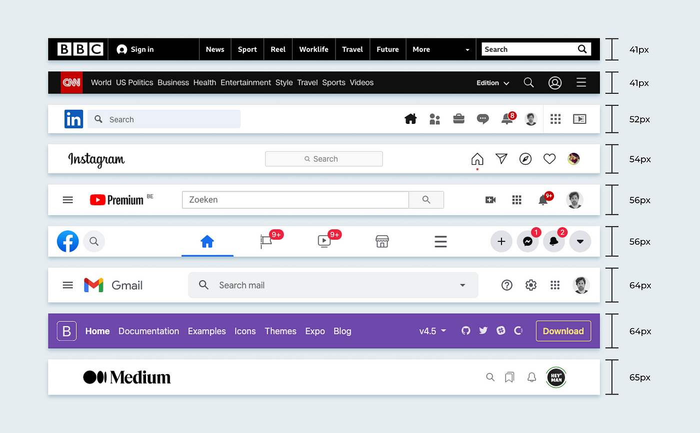

Welcome to the NavBar case studies
NavBars
A navbar (navigation bar) is a user interface element that typically appears at the top of a webpage and contains links to the main sections or pages of a website. It's used to help users navigate the site easily.
Example in W3Schools
Official Site
Link to W3Schools

Blog post about Navbars
Blogpost